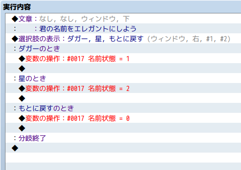
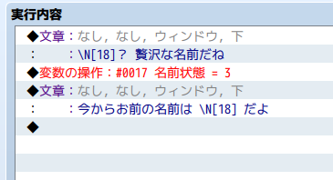
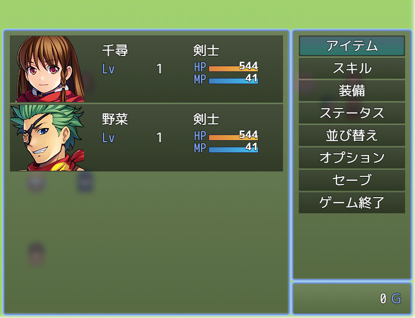
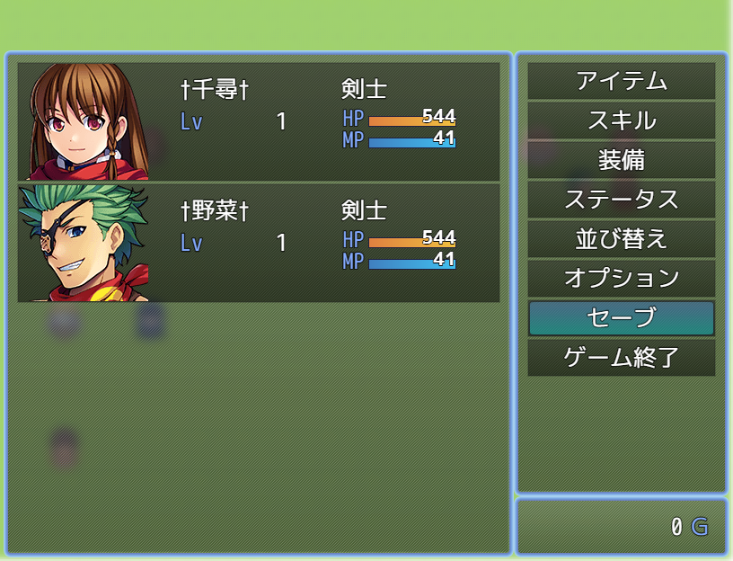
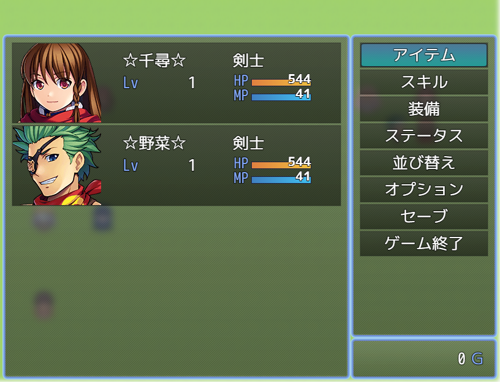
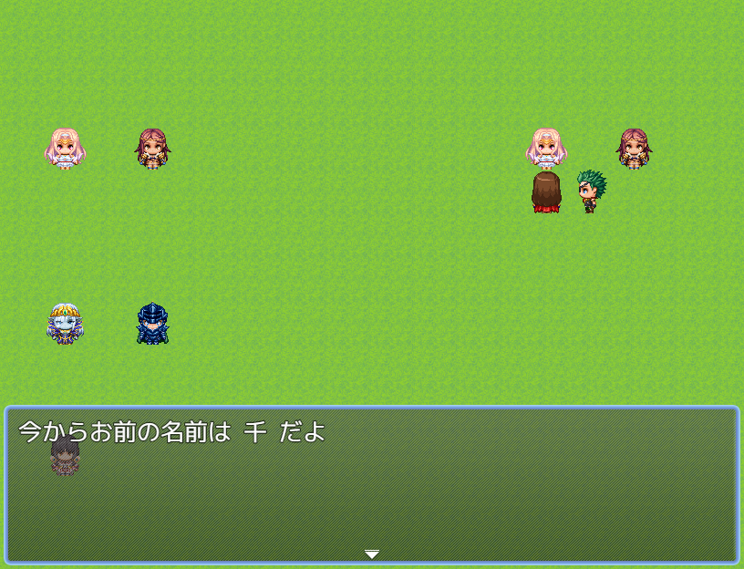
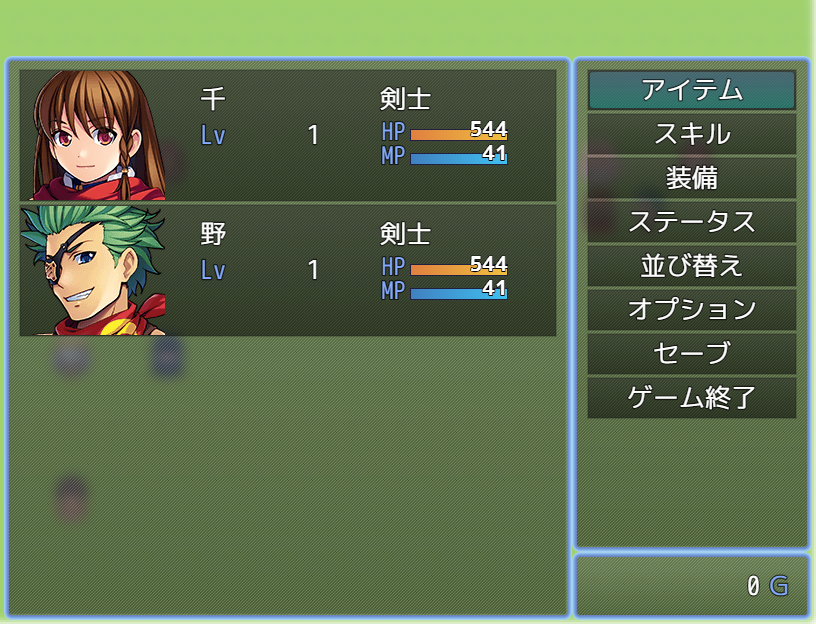
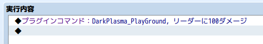
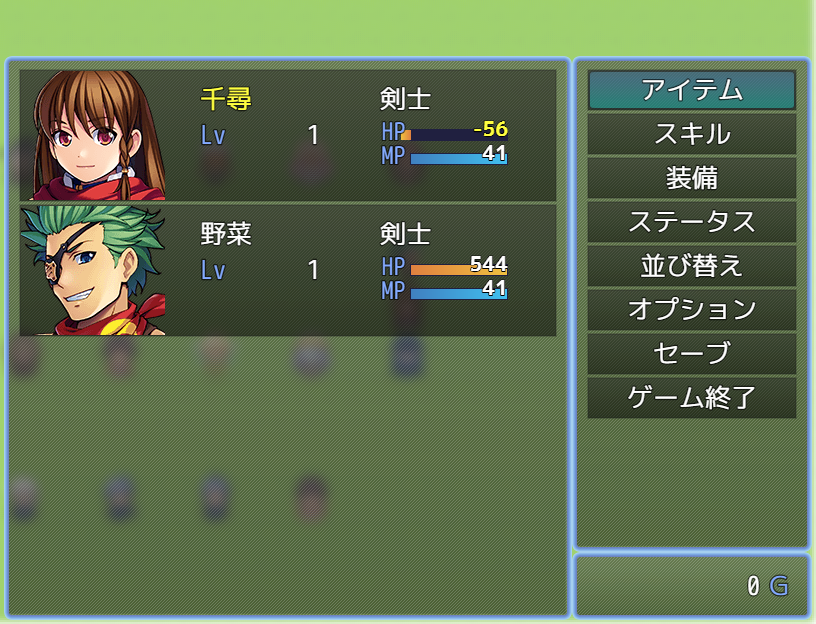

【RPGツクールMV/MZ】なぜアンダースコアで始まる変数にクラスの外からアクセスしてはならないのか
目次
本記事は、RPGツクールMVまたはMZのスクリプト、プラグインを書いているものの、本記事タイトルの理由がわからない人に向けて書いています。
有識者の方におかれましては、正確性を欠いた記述を見つけ次第、twitter @plasma_dark (R18) または @elleonard_f (年齢制限なし) へご連絡ください。
経緯
RPGツクールMV/MZはjavascriptで書かれたコアスクリプトを、同様にjavascriptで記述したプラグインにより拡張・改変することができます。
また、イベントコマンドとしてツクールエディタ内で小規模なスクリプトを書いて動作させることも可能です。1
コアスクリプトは記法こそクラスでなくprototypeで書かれているものの、フォーマットが整っていてかなり読みやすい類のコードになっています。
自分でゲームシステムを拡張するためにプラグインを書き始めるユーザも少なからずいるようで、そういった入門者に向けた解説記事も熱心なユーザによって整備されつつあります。
本記事もその一環ではありますが、内容は記事タイトルにある通り、コーディングの際に気をつけるべきある一点に絞っています。
RPGツクールMV/MZのプラグインを読み書きするがそのスキルに不安を持つ人向けであるため、カプセル化に関する詳細な説明を行うものではなく、RPGツクールMV/MZに絞ってその理由を例と共に紹介する内容であることをご承知おきください。
アンダースコアで始まる変数についての説明
アンダースコアで始まる変数2は、RPGツクールMV/MZのコアスクリプトの規則として、クラスの外部から直接アクセスすべきでない、という暗黙の決まりがあります。3 4
これがなぜかと言うと、クラスとして公開している操作5を限定することでクラスごとの独立性を担保し、保守しやすくするためです。
……とだけ言っても初学者には何のことやら、と思いますので、二つほど簡単な例を紹介します。
アクターの名前
Game_Actor クラスが持つ _name 変数について考えてみることにします。
これはアクターの名前を意味する変数ですが、 Game_Actor 以外のクラスからは Game_Actor.prototype.name メソッドを介してアクセスされています。
例えば、ステータス画面で名前を描画する際は以下のようにしてアクセスしています。
Window_StatusBase.prototype.drawActorName = function(actor, x, y, width) { |
actor.name() がアクターの名前です。
メソッドの内容はどうなっているかというと
Game_Actor.prototype.name = function() { |
this._name を返しているだけです。
ステータス画面で名前を描画する際に使っていた actor は Game_Actor クラスの実体で、そのアクターの名前にアクセスするだけであれば actor._name と書いても良いはずです。
ですが、ここではそれをせず、メソッドを介してアクセスしています。
アクターの名前に関する拡張プラグインを作りたいと思った時に、この仕組みが効いてきます。
実現したいシステムの例
まず、全てのアクターの表示上の名前を、元の名前の両サイドにダガー文字を付与したものにしたいという要求があったとします。
ここで元の名前とは、データベースに設定されているアクターの名前のみならず、イベントコマンドの名前の変更を使って変更した後の名前も含んだ意味であるとします。6
最小規模のプラグイン
(() => { |
これだけです。 Game_Actor.prototype.name を上書きして、両サイドにダガー文字をつけた名前を返すようにしています。
ステータス画面をはじめ、名前を描画する箇所では全てこのメソッドを介してアクセスされるので、最低限のプラグインで済ませることができました。
このプラグインが何をしているかというと、 name という Game_Actor がクラスの外部に対して提供する、名前を取得する操作の実装を書き換えています。
ステータス画面を描画する Window_StatusBase などの外部クラスは、こうして提供された操作7だけ把握しておけば良く、その中の実装がどうなっているかまで知っている必要はありません。
プラグインを拡張する
ダガーを星にしたいとか、油屋の経営者に贅沢だと名前を一文字にされる場合はどうすれば良いでしょう。
もちろん、元の世界に戻るためには名前を取り戻さなければいけません。ついでにダガー文字もつけてオシャレに凱旋したいお年頃かもしれません。
今回は簡単のため、以下のようにしました。
(() => { |
変数17番の値次第で、アクターの名前が変わるというものです。


こんな感じのイベントで変数の値を書き換えて、名前が変わるかどうか見てみましょう。

元々こうであったものに……


ダガーや星を両サイドにくっつけたり



一文字になったりします。
アクターの名前にはメソッドを介してアクセスされるため、この実装で正しく動くわけです。
アクターのHP
アクターの名前の例では、値を取得する操作に絞って説明しました。
今度はアクターのHPを増減させる操作、つまり値を書き換える操作を例にとって説明します。
実現したいシステムの例
話をシンプルにするために、パーティリーダーのHPに100のダメージを与えるプラグインコマンドを考えます。
Game_Actorの外部からHPを直接操作する
/*: |
プラグインコマンドの作り方については、公式のプラグイン講座を参照してください。
ここでは、プラグインコマンドの処理の中身についてのみ説明します。
$gameParty.leader() で、パーティリーダーのアクターの状態、すなわち Game_Actor インスタンスを取得することができます。
そのHPを100減らしているのだから、これで正常に動きそうだと思われるかもしれません。
では、実際にこのプラグインコマンドを数回実行してステータス画面で結果を確認してみましょう。


はい。不具合です。HPがなんと負の値になっています。Game_Actor クラスの外部から _hp を直接操作してしまうと、こうなります。
正しいやり方はコアスクリプト内にある
イベントコマンドの「HPの増減」でバトラーやアクターのHPを増減させるためのコードを確認してみましょう。
rmmz_objects.js 内に次のように定義されています。
Game_Interpreter.prototype.changeHp = function(target, value, allowDeath) { |
諸々コードが書かれていますが、重要なのは target.gainHp(value); の行です。target はHPの増減を行いたい対象、 value はHPをいくら増減するかという値、 gainHp はHPを獲得する操作であるらしい、というところまでは簡単な英単語が読めれば推測できるかと思います。
この target は、詳しい説明は省きますが Game_Actor か Game_Enemy のどちらかのインスタンスです。gainHp はそれらのクラスが提供する操作です。同じファイル内に定義されているので、中身を見てみましょう。
Game_Battler.prototype.gainHp = function(value) { |
Game_Battler なる新しいクラスが出てきました。
実は、 Game_Actor も Game_Enemy も Game_Battler クラスを継承しています。8
継承についてはざっくり言ってしまうと、クラス内に定義したメソッドや変数を別の新しいクラスに引き継ぐことです。
つまり、 Game_Battler で定義されたメソッドである gainHp は、 Game_Actor や Game_Enemy にも引き継がれており、どちらのクラスでも使えるようになっています。
それでは、実際にメソッドの処理内容を見てみましょう。
引数として受け取る value は、先ほどと同様に、HPを増減させる値です。this._result に関しては、戦闘中以外は気にしなくて良いものなので、本記事では触れずにおきます。
ここで大事なのは this.setHp(this.hp + value); の行です。9
自分のHPを現在HP + 増減値にセットしている、という風に読めますね。
では、更に深追いしてみましょう。
Game_BattlerBase.prototype.setHp = function(hp) { |
Game_BattlerBase は Game_Battler の更に親クラスです。ここで定義したメソッドや変数も、 Game_Actor や Game_Enemy のクラスに引き継がれています。
ようやく、 this._hp に対する書き換えのコードが見つかりました。
ところが、このメソッドはそれ以外にも何かしているようです。
Game_BattlerBase.prototype.refresh = function() { |
今、重要な行は1つだけです。this._hp = this._hp.clamp(0, this.mhp);
.clamp はツクールのコアスクリプトが数値型に対して追加しているメソッドで、数値が第一引数よりも小さければ第一引数を、第二引数よりも大きければ第二引数を返します。
つまり、HPの増減によって this._hp が負の値になっても、ここの処理を通ることで 0 に直されるのです。
修正プラグイン
ここまでを踏まえて、先程のプラグインを修正してみましょう。
/*: |
Game_Actor は、HPの増減操作を行う gainHp というメソッドを提供しています。
クラスの外部からはそれを使うだけで、後は Game_Actor の中でよろしく、HPが負の値になったりしないように調整してくれるのです。
Game_Actor が秘匿しておきたい _hp を外部から直接書き換えようとすると容易に不具合が発生すること、 Game_Actor が提供してくれる gainHp メソッドを利用することで不具合を回避できることがおわかりいただけたかと思います。
例外
基本的に、アンダースコアから始まる変数に対してクラスの外からアクセスしたり書き換えたりするべきではありません。
しかし、実現したい内容によってはコアスクリプトで取得操作が提供されていないような変数にクラス外からアクセスしたくなるケースもあります。
例えば、アクターの覚えているスキル一覧が該当します。Game_Actor の中に _skills という変数があります。
これは、アクターの覚えているスキルのID一覧を表す配列です。Game_Actor.prototype.skills というメソッドもありますが、これで取得できるのは、アクターのスキル一覧画面に表示すべきスキル情報一覧です。
覚えているスキルのみでなく、装備などで一時的に追加されたスキルもこれに含まれるため、覚えているスキルに限定して取得したい場合には使えません。10
こういう場合には、仕方なく actor._skills などとして外部から直接アクセスすることもあります。11
まとめ
アンダースコアから始まる変数にクラスの外から直接アクセスしたり、書き換えたりすべきではないということと、その理由について簡単な例を交えて説明しました。
この基本方針を守って書かれているというのは、コアスクリプトが読みやすく、どこにどんな処理があるのかあたりを付けやすい理由の一つでもあります。
すぐに理解して実践するのは難しいことと思いますので、ある程度コードを書いてみたら、この記事の内容を思い出しながらもう一度書いたコードを読み直してみてください。
本記事のタイトルにある方針を守って書かれたコードは、時としてバグを防ぎ、バグの原因の発見を助けてくれます。
本質的でないバグの修正に追われて、本当にやりたかったゲームの開発ができなくなっては本末転倒ですから、コードを書く際には是非意識してみてください。
- 内部的にはevalしているので、規模の大きなスクリプトは推奨しないし、小規模でも多用しないほうが良い。
- 正確にはメソッドも含むが、コアスクリプト内で見る頻度は圧倒的に変数のほうが多い。
- クラス内部に秘匿しておきたい情報に外部からアクセスさせない機能を持つ言語もあるが、javascriptはそうではないので、命名でその意味を表す慣習がある。
- プライベートクラスフィールドは実験的な内容であり、サポートしていないブラウザもあるため、ここでは触れない。
- 外からアクセスしても良いメソッド。変数そのものを公開することは多くない。
- 混乱させるようで非常に心苦しいが、実装を単純化するための仕様定義。例えば、「すけ」という名前を「かく」にイベントコマンドで変更した場合、表示上「†かく†」とする。
- インターフェースと呼ばれる。
- Game_BattlerはGame_ActorとGame_Enemyの親クラスである、という。
- なぜ._hpでなく.hpなのかは本記事では説明しない。気になる場合はrmmz_objects.js内を // Hit Points で検索してみてほしい。
- 全く使えないこともないが、かなり回りくどい使い方をしなければならず、かえって保守性が落ちる。
- プラグインを書く場合はGame_Actorの中に処理を追加すべきだが、小規模なスクリプトを実行したいだけの場合は大仰になるので、外から直接アクセスすることを許容するケースもある。